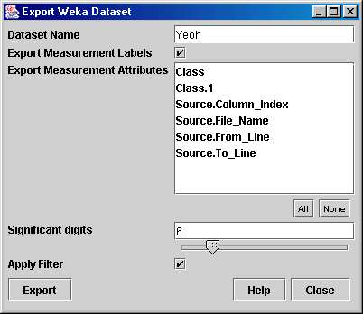

Export data to a Weka ARFF (Attribute-Relation File Format) text file. Weka is an open-source machine learning toolkit developed in Java by some friendly folks at Waikato Univerity in New Zealand. ARFF files can be loaded directly into the The Weka Knowledge Explorer which provides a user-friendly graphical interface to the Weka toolkit.

Dataset Name is used to fill the @relation field of the ARFF file, which is the title given to the data set.
Include Measurement Labels determines whether the measurement labels are included as an @attribute in the ARFF file.
Export Measurement Attributes chooses which measurement attributes are exported as @attributes with the data. The measurement attributes can be used to describe known classifications of the data for use in building classification algorithms in Weka.
Significant Figures lets you select how many decimal places are included in the ARFF file.
Use the Apply filter checkbox to determine whether the currently active Filters (if any) are applied to the spots as they is saved.